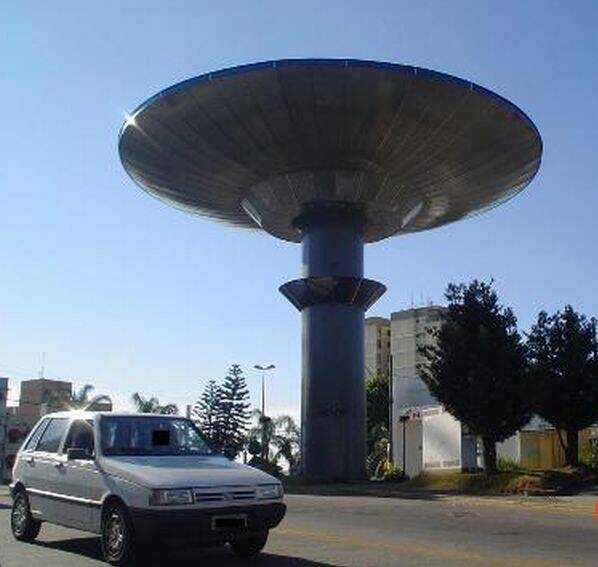

Varginha incident
Minas Gerais, Brazil, 1996

In January 1996, three young women said they saw a strange creature in a vacant lot, and rumors spread that the military had captured beings nearby. A Brazilian Army inquiry concluded they had seen a local man, and no physical evidence has been made public. 1
Open in the interactive Watcher
Related
- A police officer died after handling a Varginha creature Claim
- The military captured alien creatures at Varginha Claim
- James Fox Person
- Aldo Rebelo Person
- Marco Eli Chereze Person
Sources
- Varginha UFO incident Wikipedia